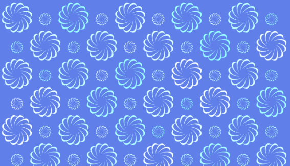
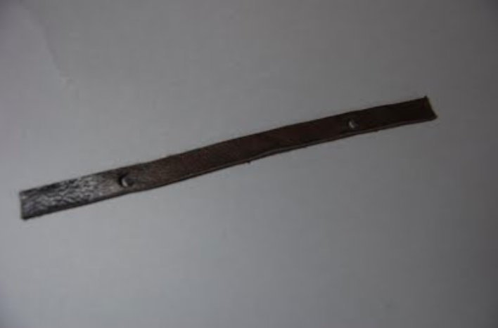

1 / 3

Apron made from programmed design
2 / 3

Javascript generated design
3 / 3

Customizable bracelet using OpenJscad
I took two semester long courses focused on Computer Science in my sophomore year at Lick-Wilmerding High School.
Computing 1 is a semester-long Techincal Arts course offered at LWHS (Lick-Wilmerding). In the class, we learned about
the basics of computer science through Scratch and p5 (javascript). In many of our projects, we interwove art with computer programming,
demonstrating how coding is filled with creativity and self-expression. We generated visual art, designed textiles, created animations,
made custon software, and physically fabricated our designs on machines like the laser cutter, 3d printer, and CNC mill. Through all our projects,
we developed a strong foundation in computer science concepts.
Computing 2 PPP (Public Purpose Program) is another semester-long Technical Arts course offered at LWHS that has a
community focused aspect. In this class, we continued to deepen our understanding of computer science. We also focused more on what computers are,
learning about binary, the history of the computer, digital logic, memory, and more. We were able to have a lot more freedom with this course- we
were able to choose a programming language research and use to make a project of our choice.
In both classes, we practiced collaboration; many of our large projects required that we work in group or pairs, preparing us for the culture
at jobs where people work in teams to create awesome products. In our final project,to fulfill the PPP aspect, we were tasked to make a website
or app that would benefit the community. We had to learn a lot about UI/UX, communication with clients and overall planning.